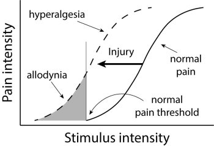
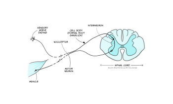
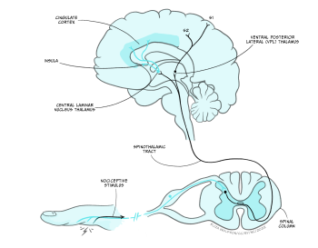
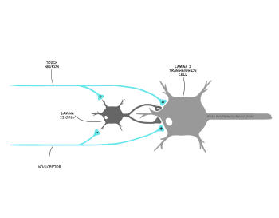

From physical injury to heartache: sensing pain
There are wounds that never show on the body that are deeper and more hurtful than anything that bleeds.
Laurell K. Hamilton, Novelist
The opening quote illustrates the complexity of pain. When we think of pain in simple terms, we might think of it as the experience that arises from a cut or bruise to the body. It is, after all, one of the bodily senses that comes under the banner of somatosensation. This simple idea is correct, and it is our starting point in this section, but it does not fully encompass the experience of pain, as you will soon learn. Therefore in this section we will discuss three different types of pain, beginning with nociceptive pain, which refers to the kind of pain that arises from a bodily injury.
Nociception: detecting bodily injury
In the previous section you learnt about four different types of modified neurons which act as sensory receptor cells responsible for our sense of touch. There is also a fifth type of modified neuron in the skin which is responsible for detecting tissue damage, and this is called the nociceptor. Unlike the touch receptors, nociceptors do not have any associated structures such as capsules: instead, they are referred to as free nerve endings. On the surface of the free nerve endings there are different types of channels, which means they can detect different types of stimuli.
Keeping in mind the idea of damage to the body, as opposed to heartbreak or other types of pain, what type of stimuli might be detected by nociceptors?
You could have come up with a range of ideas here. In the opening paragraph we mentioned cuts and bruises, so you may have identified stimuli that cause damage to tissue or apply great pressure. You might also have noted that extreme temperatures can cause pain, or some chemical substances. All of these would have been correct.
For each type of stimulus that causes bodily damage, the nociceptor must detect the stimulus and produce a receptor potential through the process of transduction.
This process varies according to the stimulus type. The first type of noxious stimulus that can be detected is intense pressure, for example, pinching or crushing. This type of stimulus is detected by mechano-nociceptors. The process of transduction here is very similar to that which was outlined for touch receptors.
Which kind of ion channels open in the nerve endings of touch receptors to produce a receptor potential?
Mechano-sensitive ions channels open, allowing sodium ions into the nerve ending causing a depolarising receptor potential.
Another type of transduction occurs when tissue is damaged. The damage results in cell membranes being ruptured, so that the chemical constituents of a cell which are typically found within the intracellular space spill into the extracellular space.
Can you identify an ion which is normally found in high concentration inside neurons but at a lower concentration outside?
Potassium
Substances that can be released from the inside of the cell include potassium ions, which are critical to the function of neurons, but there are other ions. For example, hydrogen ions also increase in the extracellular space when tissue damage occurs, causing a decrease in pH and an increase in acidity. Substances such as bradykinin and prostaglandins can also be released from damaged cells.
These chemicals directly increase as a consequence of tissue damage, but there are also other indirect changes which impact on the chemical constituents of the extracellular space. When tissue is damaged the immune system makes a response to protect the body. This response includes release of several chemicals in the area: histamine, serotonin, and adenosine triphosphate (ATP). All these changes give the nociceptors plenty to detect! Some of the substances directly activate the nociceptor (e.g., potassium and bradykinin) whilst others sensitise them (e.g., prostaglandins).
The final type of stimuli that can activate nociceptors are those that are very hot (>45°C) or very cold (<5°C). Transduction of these stimuli depends on heat-sensing channels. When these channels detect hot or cold stimuli, they open and allow both sodium and calcium ions into the nociceptor. The consequence of this is depolarisation in the form of the receptor potential.
What would you expect to happen after the receptor potential is induced?
If the receptor potential is large enough, an action potential will be triggered.
As you might expect, the receptor potential can trigger an action potential in the nociceptor and this information can then be transmitted to the central nervous system. Before we look at the pathway to the spinal cord and the brain, it is helpful to note a few features of nociceptive pain.
Firstly, although our starting point here was nociceptors being located in the skin, they are in fact found throughout the body. The only two areas where they are not found are inside bones and in the brain. The latter explains why brain surgery can be conducted with awake patients, as described in the previous section on touch. Other organs, such as the heart, lungs or bladder do have nociceptors and activation of these is referred to as visceral pain. Visceral pain is a special type of nociceptive pain. It is much rarer than the typical nociceptive pain that arises from our muscles, skin or joints, which is technically referred to as somatic pain. The rarety of visceral pain contributes to an interesting phenomenon called referred pain (Box 3).
Secondly, nociceptors can alter their sensitivity following tissue damage, resulting in hyperalgesia or allodynia. Hyperalgesia refers to an increased sensitivity following injury (Gold & Gebhart, 2010).
From an evolutionary perspective, why might hyperalgesia be beneficial?
It is likely to support greater period of rest to allow recovery.
Hyperalgesia is considered to be part of ‘sickness behaviour’, that is, the behaviour that we have evolved to allow any infection or illness to run its course (Hart, 1998). Allodynia refers to nociceptors becoming sensitive to non-noxious stimuli, for example, a gentle touch, after injury.
The distinction between the two is illustrated in Figure 4.11.

Box 3: Referred pain – what hurts anyway?
Referred pain is an interesting phenomenon where injury to one area of the body creates a perception of pain arising from a different area. There are some well-known examples of this shown in the table below:
|
Site of injury |
Site of pain perception |
|
Heart |
Left arm, shoulder and jaw |
|
Throat |
Head |
|
Gall bladder |
Right shoulder blade |
|
Lower back |
Legs |
Table 2. Examples of referred pain
Referred pain can be problematic because it can make it harder for health professionals to diagnose and treat the problem if they are unable to locate the source of the pain. Some examples are common – for example, a heart attack presenting as pain down the left arm and shoulder – meaning that these are easily identified, but for others, it can cause delays to treatment.
There is no consensus on exactly how referred pain arises but it is thought that convergence of information from the visceral site and the somatic site, for example, the heart and the shoulder respectively, onto a single neuron, resulting in an ambiguous signal in the brain. Perception is driven both by the sensory stimulus (bottom-up processing) and the information from memory and past experiences (top-down processing) and when faced with an ambiguous signal, the brain interprets the situation according to what it most expects. We are more likely to have hurt our shoulder than our heart and so the injury to our heart is perceived as a pain in our shoulder.
Pain pathways: getting pain information to the brain
Once an action potential has been produced in the nociceptor the information can be transmitted to the brain. As with the somatosensory neurons responsible for detecting touch, nociceptors also have their cell bodies in the dorsal root ganglion. From here they enter the spinal cord. There are then two key routes information can take. The simplest route is shown in Figure 12 and shows that the nociceptor connects to an interneuron, which in turn synapses with a motor neuron, forming a reflex arc. This pathway is responsible for the pain withdrawal reflex, for example, moving your hand away from a shard of glass or hot pan handle. The pathway does not travel via the brain and therefore works below conscious awareness to allow a fast response, withdrawing the body from any source of pain.

The remaining pathway travels to the brain and is shown in Figure 4.13. It is this pathway that underpins our conscious perception of pain, which can only occur when the signal reaches the brain. This pathway is referred to as the spinothalamic tract. Nociceptors feeding into this pathway terminate in the superficial areas of the spinal cord and synapse with lamina I neurons, also referred to as transmission cells, which form the second order neuron that crosses the midline and travels up to the thalamus, hence the name spinothalamic.
Using Figure 4.13, can you identify which thalamic nuclei are within the spinothalamic tract?
The ventroposterior lateral nuclei (VPL) and the central laminar nuclei.

From the VPL, third order neurons continue to the secondary somatosensory cortex. Additionally, neurons synapsing in the central laminar nucleus in the thalamus connect with neurons which carry the signal onwards to the insula and cingulate cortex. As with touch information, pain arising from the face region travels separately in the trigeminal pathway.
You may have spotted that the pathways responsible for touch travel up the spinal cord ipsilaterally (i.e. on the same side at the sensory input) and cross the midline in the brainstem, whilst the pathways for nociception travel up contralaterally (i.e. on the opposite side), having crossed the midline in the spinal cord. This gives rise to an unusual condition called Brown-Séquard Syndome (Box 4).
Box 4: Brown-Séquard Syndome
Brown-Séquard Syndome is named after the Victorian scientist (Figure 4.14) who first described and explained a rare spinal injury, presenting his case study at the British Medical Association’s annual meeting in 1862.

In the case study he presented the syndrome, characterised by loss of touch on one side of the body and loss of pain sensation on the other, was caused by a traumatic injury (Shams & Arain, 2020). However, the syndrome can, albeit less commonly, arise through non-traumatic injury, such as multiple sclerosis or decompression sickness. The syndrome occurs due to incomplete damage to the spinal cord, such that only one side is severed. The unusual pattern of lost sensation arises because touch information and pain information ascend on different sides of the midline within the spinal cord. Touch ascends ipsilaterally to the stimulus whilst pain ascends contralaterally. When one side of the spinal cord is cut, touch sensation is lost on the same side as the injury and pain on the opposite side.
Prognosis for individuals with Brown-Séquard Syndome varies depending on the cause and the extent of the damage, but because the syndrome only sees partial damage to the spinal cord, it is possible to have significant recovery, provided complications such as infections can be avoided.
Clearly, it is very important that information about bodily injury can reach the brain, but pain is also an unpleasant sensation, which is not always beneficial.
Can you think of a situation when it is helpful not to be aware of, or focus, on a bodily injury you are experiencing?
You could have come up with lots of ideas here. Perhaps the most obvious one is when your survival depends on being able to mobilise. Battlefield injuries are associated with this situation, where an individual reports not being fully aware of their injuries until they are away from the frontline. Similar reports can be found for people in sports matches.
The fact that there are situations when pain can be modulated suggests that it is not a simple case of the nociceptor sending an uninterruptible signal to the brain. In fact you have already learnt about the one type of input to the spinothalamic tract that can interrupt the signal about a noxious stimulus before it reaches the brain.
Think about when you knock your elbow, head or knee on something. What do you typically do immediately, without thinking?
The most common reaction here is to rub the site that you have knocked. That is, provide touch stimulation. You often see this when young children fall or hurt themselves, with the caregiver ‘rubbing it [the injured site] better’.
A key explanation of why touching the site of injury may provide pain relief comes from the Gate Control Theory. This theory was first put proposed by Ronald Melzack and Patrick Wall in 1965 and describes how pain perception can be modulated by touch. In their theory, Melzack and Wall suggest that there is a gating mechanism within the spinal cord which, when activated, results in a closing of the gate, and can prevent pain signals reaching the brain.
Recall that in the spinal cord the nociceptor synapses with lamina I cells, also called transmission cells. However, other sensory inputs also enter the spinal cord, in the form of touch sensory receptor neurons. According to Melzack and Wall, activation of the touch receptors can result in the signal from the nociceptor being blocked.
Figure 4.15 shows the proposed circuitry for this. In the figure you can see the touch receptor and the nociceptor. Both are synapsing with the lamina I transmission cell and another neuron in lamina II of the spinal cord. This small lamina II neuron, called an interneuron, is critical because it is thought to act as the gate due to its ability to inhibit the transmission cell. When the nociceptor alone is activated, Wall and Melzack proposed that it will inhibit the lamina II cell and simultaneously excite the transmission cell. The effect of inhibiting the lamina II cell is to remove the inhibition that cell normally exerts on the transmission cell. In effect this results in direct excitation of the transmission cell by the nociceptor, and indirect dishibition, that is, removal of all inhibition, on the same cell through the interneuron. This means the transmission cell is excited and a signal reaches the brain causing the perception of pain.

If the touch receptor neuron is also excited, this has the effect of exciting the inhibitory interneuron in lamina II, which results in the inhibition of the transmission cell directly – in effect a two-pronged attack on transmission cell excitation, reducing the likelihood of an action potential being produced and the signal about pain reaching the brain.
The Gate Control Theory is just a theory, and like all theories there is evidence both for and against the theory being accurate. For example, lamina II interneurons have been found to contain GABA, an inhibitory neurotransmitter, supporting the theory. However, nociceptors have so far only been found to form excitatory synapses, against the proposed theory. Although elements of this theory may be inaccurate, it has proved highly influential.
We indicated above that you have learnt about the first way that pain signals can be modulated when we described the role of touch. The other way pain signals can be altered is by actions of the brain itself.
Pain pathways: descending control of pain from the brain
Within the brainstem there are several structures which can modulate our experience of pain. We will begin with the periaqueductal grey (PAG), which is also referred to as the central grey. This structure is activated by activity in the spinothalamic tract and research has shown that electrical stimulation of the PAG results in a powerful pain-relieving or analgesic effect (Fardin et al., 1984). It is here that some endogenous opioids are thought to act.
This analgesia is thought to occur because of the connections between the PAG and two structures called the locus coeruleus and raphe nuclei. The locus coeruleus contains noradrenergic neurons and the raphe nuclei contains serotoninergic neurons. It is thought that both of these neurons send signals down to the spinal cord to the lamina II interneurons, which in turn suppress lamina I transmission cells that form the spinothalamic tract.
What would be the impact of suppressing the spinothalamic tract?
Reduced activity in this pathway would reduce the amount of activity reaching the thalamus and other areas of brain, minimising our perception of pain.
This descending pathway is an example of negative feedback. A noxious stimulus causes excitation in the spinothalamic tract which in turn activates the PAG. The PAG then sends a signal down to the spinal cord to interrupt, or silence, the incoming signal from nociceptors.
We have already discussed some situations where it is beneficial to not experience the full unpleasantness of pain, for example, in the case of a battlefield injury or where survival depends on being able to focus on getting to safety. It is likely this pathway from the PAG is critical in these situation. However, there are other, more everyday situations, where it is helpful not to focus on pain and therefore to have a way of modulating the experience.
Think back to the last time you did any of these things: a) went to the dentist for a filling b) had a vaccination by an injection or c) had a piercing or tattoo. How did you manage the pain associated with this experience?
You could have come up with all kinds of things here, but one thing they would likely all have had in common is distraction. Your dentist may have placed a poster on the ceiling of a busy image for you to look at, or had music playing. The doctor or nurse giving the vaccination or your piercer or tattooist will likely have chatted away to distract you.
In these situations you are experiencing attentional analgesia, that is where attention is directed away from the threatening event, resulting in decreased pain perception. Researchers have shown that this kind of analgesia does involve the PAG but also involves several other structures. Oliva et al. (2022) have demonstrated that attentional analgesia involves parallel descending pathways from the anterior cingulate cortex (ACC) to the locus coeruleus and from the ACC to the PAG and onto a region of the medulla, both extending down to the spinal cord.
Before we leave pathways behind, we need to introduce the second type of pain. Recall that we said we would examine three types of pain at the start of this section. The first is the nociceptive pain, that is pain that arises through actual bodily injury. The second type of pain is neuropathic pain. This type of pain arises through damage to the nociceptors and pathways that carry nociceptive information. One example of this is so-called thalamic syndrome. This syndrome arises when the thalamus is damaged, for example, by a stroke. Individuals with this syndrome experience intense burning or crushing pain from any sort of contact with the skin at a specific location. The pain is neuropathic because there is no actual damage to the location on the body where the sensation is felt but there is damage to the neurons forming the pathways that would typically carry pain information to the brain about this bodily region.
We now turn our attention to the final type of pain, the kind that arises without any damage to the body, including the neurons that process pain. This is psychogenic pain.
Pain without physical damage: psychogenic pain
The opening quote to this section indicated that pain can extend beyond physical damage. This idea is in keeping with our own day-to-day experiences and our use of language. For example, we talk of heartache and life events breaking or damaging us. In these cases, there can be no physical injury to the body or the nerves that normally carry nociceptive information, meaning there is no nociceptive or neuropathic pain, and yet, our experiences are best described as painful. This is psychogenic pain and it refers to a type of pain that can be attributed to psychological factors.
There is a huge range of psychological factors that could result in feelings described as pain. In the previous paragraph we mentioned heartache which could arise from a relationship breakdown or bereavement, but there are other, perhaps less obvious factors as well. For example, the Social Pain Theory (MacDonald and Leary, 2005) suggests that being excluded from a social group or desirable interpersonal relationship can cause social pain, due to rejection, which is similar to physical pain. They also suggest that this social pain serves the same purpose as physical pain which is to respond to any threat to survival including reproduction. Furthermore, there is some evidence that social exclusion and rejection involve similar areas of the brain.
Researchers used functional magnetic resonance imaging (fMRI) to demonstrate overlap between the areas involved in physical pain and the experience of social exclusion. Eisenberger and colleagues asked people to play a virtual ball game whilst having their brain scanned. They found that the anterior cingulate cortex was more active when participants were excluded from the game and that this activity was positively correlated with the self-reported distress felt by participants (Eisenberger et al., 2003). Recall that this area of the cortex is also activated by physical pain. Future studies went on to demonstrate paracetamol, which can provide relief from physical pain, can also decrease activity in this region and the perceived social pain felt (De Wall et al., 2010).
This provides an important link to our last section on pain – its treatment.
Treating pain: medication and beyond
It would not be appropriate to talk about pain without discussing pain treatment. Whilst some pain will resolve without treatment, other pain will require treatment or management. The importance of pain treatment is illustrated by examining the consequences of not treating pain. Failure to treat chronic pain, that is a pain persisting for more than three months, can result in altered mood, mental health disorders, cognitive impairments, sleep disruption and, overall, a reduction in quality of life (Delgado-Gallén et al., 2021).
You have now read about three different types of pain: nociceiptive (encompassing somatic and visceral), neuropathic and psychogenic. It is probably not surprising to learn that with such a range of pain experiences, there is no single treatment that will be effective for all types of pain in all individuals. Additionally, psychogenic pain is rarely treated by healthcare professionals, although the underlying psychological factors may be addressed through talking therapies.
One important consideration when treating pain is whether the pain is acute, for example, from a cut or even broken bone, or chronic, for example, from nerve damage that cannot repair. Some treatments may be effective in the short term, and therefore suitable for acute pain, but not suitable for chronic pain, for example, because of side effects of long term pain medication.
Treatment of acute pain is typically the most straightforward and is often achieved with drug treatments. These can be categorised according to where in the pain pathway they act:
- Acting at the sensory nerve ending: Medicines such as non-steroidal anti-inflammatory drugs (NSAIDS e.g., ibuprofen) act at the sensory nerve ending of nociceptors to block the sensitization of nociceptors by prostaglandins.
- Acting on the nociceptor axon: Medicines such as local anaesthetics (e.g., lidocaine) act to block sodium channels in the cell membrane, prevent depolarisation and, therefore, action potentials.
- Acting in the spinal cord: Medicines such as opioids, gabapentin and ketamine act in the spinal cord, likely through a range of mechanisms.
- Acting in the brain: Opioids may also act on the brain in the thalamus and sensory cortex, along with antidepressant drugs. These drugs can also alter mood meaning the pain may continue but its impact is reduced.
Some of these drugs may also be used to treat chronic pain but consideration needs to be given to side effects. For example, long term use of NSAIDS is associated with stomach problems, and long term use of opioids comes with the risk of addiction. Decisions about long term drug use must therefore be made carefully and on an individual basis. For example, long term opioid use may be deemed appropriate where the pain is due to a terminal condition.
Other treatments that can be used for acute or chronic pain include stimulation techniques such Transcutaneous Electrical Nerve Stimulation or TENS. TENS machines provide a low-voltage electrical stimulation to the site of pain. It is thought that this low level of stimulation, activates the touch receptors, which, as you should recall from the discussion of the Gate Control Theory, could in turn reduce perceived pain. Although TENS is not typically used for acute injuries, it is sometimes used to treat the acute pain during labour and period pains. A systematic review of the literature on labour pains, which included data from 1671 women found little difference in the pain perceived by women receiving TENS compared to those in control groups, not receiving TENS (Dowswell et al., 2009). However, results for period pains are more positive with results from 260 individuals indicating that when compared to a sham TENS condition (i.e., the machine is attached but not switched on), TENS provided significant pain relief (Arik et al., 2022).
Studies into the effectiveness of TENS in chronic pain have looked at a range of conditions. For example, a review of the literature investigating osteroarthritis in the knee, a condition which affects 16% of individuals over 15 years of age worldwide (Cui et al., 2020), found TENS to be effective at reducing pain and improve walking ability (Wu et al., 2022).
Surgical approaches may also be taken to treating chronic pain. Clearly any surgery carries risks and therefore this type of treatment is only used in extreme cases. One situation in which surgical approaches may be used is in the treatment of intractable pain found in up to 90% of individuals with terminal cancer. In this situation, surgery may be deemed an appropriate treatment. The most common types of surgery conducted are cordotomy and myelotomy (Bentley et al., 2014). In the cordotomy surgeons cut the spinothalamic tract on one side of the spinal cord.
If only one side of the spinal cord has the spinothalamic tract cut, would pain from both sides of the body be reduced?
No, only pain from the contralateral side of the body as the spinothalamic tract cross the midline immediately on entering the spinal cord.
A cordotomy is a suitable treatment for unilateral pain, that is, pain on one side of the body. In a myelotomy, the surgeons cut at the middle of the spinal cord, again targeting the spinothalamic neurons, this time at the point they cross.
As you will likely have gathered, chronic pain typically requires a multifaceted approach which may include psychological interventions including cognitive behavioural therapy. This kind of multifaceted treatment is typically delivered at pain management clinics where individuals are supported by a team of professionals including pain consultants, physiotherapists, psychologists and occupational therapists. Such clinics keep the individual at the centre of treatment and they are active in their pain management, with the view to educating them about their pain and finding suitable, but often minimal, analgesic requirements.
The exact cause of the chronic pain will determine, in part, how successfully it can be treated. One type of chronic pain that is still considered very hard to treat, even with a multifaceted approach, is phantom limb pain. This type of pain consists of ongoing painful sensations that appear to be coming from part of the limb that is no longer there. This can occur in up to 80% of amputees (Richardson & Kulkarn, 2017).
However, the name ‘phantom limb’ is actually quite misleading because these kind of painful sensations are not limited to missing limbs. Up to 80% of patients who have had a mastectomy (a breast removed), typically for the treatment of breast cancer, may experience both non-painful and painful sensations arising from the missing breast (Ramesh & Bhatnagar, 2009). Exactly why phantom pain happens is still not fully understood, but is likely to be due to changes in how the nervous system is wired or connected following the amputation or mastectomy. A review of studies investigating treatments for phantom limb pain by Richardson and Kulkarn (2017) found that over 38 different therapies had been investigated including a range of drug treatments and transcutaneous magnetic stimulation (TMS), a technique similar to TENS, applying a magnetic pulse instead of an electrical one, and mirror therapy (Box 5). They concluded that despite the range of therapies test, results were insufficient to support use of any of these treatments.
Box 5: Novel approaches to pain management: Mirror Therapy
This novel treatment was first described by neuroscientist Vilayanur Ramachandran. In this treatment the patient positions a mirror box between their intact limb and the missing limb. They then look into the mirror to see a reflection of their intact limb, creating a visual representation of the missing limb (Figure 16). They can then make movements with their intact limb whilst looking at the reflection. This movement can create the perception of individual re-gaining control over the missing limb. Where the pain arises from a clenched or cramped feeling in the phantom limb, movement of the intact limb to a different position, could relieve pain.
. Available from: 10.3389/fneur.2011.00029. CC BY 4.0 licence. https://creativecommons.org/licenses/by/4.0/")
All the treatments available for pain could, in part, have their effects attributed to the placebo effect. This is where an individual gains some benefit without receiving any real treatment. The placebo effect is not specific to pain treatment, it can occur in treatment for any condition. In the context of pain, the placebo effect could be responsible if an individual gains pain relief from swallowing a tablet, even if that tablet had no impact on pain processing, or from being connected to a TENS machine, even if it is not switched on. The placebo effect is a complicated phenomenon (see also the chapter Placebos: a psychological and biological perspective); there are several reasons it might occur, including (Perfitt & Plunkett, 2020):
- Conditioned behaviour: people learn to associate pain relief with taking a tablet or receiving and injection so if when it is an inert or inactive substance, they experienced a conditioned response of pain relief.
- Expectation: people expect to get better after seeing a doctor or receiving treatment and so experience pain relief because of this expectation.
Given we know that pain perception can be modulated by descending pathways from the brain, either of these top-down mechanisms are plausible.
It is also important to recognise that other effects could occur which are mistaken for the placebo effect. For example, people may just get better over time because that is the natural trajectory of their condition, meaning there is no placebo effect, they just recovered. There is also an effect called the Hawthorne effect, which refers to the fact that simply observing people in an experiment or trial will change their behaviour. For example, in a study on drug treatment for osteoarthritis, those who are part of the trial may be more likely to complete recommended exercises than those who are not and so may experience pain relief from a placebo drug treatment, not because of the placebo effect but because they are mobilising the joint more and regularly providing an account of their behaviour, in comparison to individuals not part of a trial.
What do you think the placebo effect, or even the Hawthorne effect, means for clinical trials trying to test the effectiveness of new treatments?
These trials need to be very carefully designed to ensure that the group of people receiving the new treatment are compared to an appropriate control group. For example, it might be appropriate to have a TENS group, a sham TENS group and a third group on a waiting list who are assessed but do not receive a real or placebo treatment.
We have now reached the end of our exploration of the somatosensory system, covering touch and pain.
Key takeaways
In this section you have learnt:
- Nociceptive pain arises when there is actual physical injury to the body and it is detected by nociceptors capable of responding to mechanical, chemical and thermal signals
- Nociceptive pain can be divided into pain arising from the muscles, skin or joints, called somatic pain, and pain arising from the internal organs, which is called visceral pain. We can sometimes struggle to identify the location of visceral pain and misattribute it to somatic pain, a phenomenon known as referred pain
- Nociceptors can alter their sensitivity giving rise to hyperalgesia and allodynia. Both of these may serve to the protect the body to allow any injury or damage to pass
- When nociceptive information enters the spinal cord it can form a reflex arc with a motor neuron or be transmitted up to the brain via the spinothalamic tract. From the thalamus, information about noxious stimuli is sent onto various cortical areas
- The Gate Control Theory proposes that signals in the spinothalamic tract can be blocked by activation of lamina II interneurons in the spinal cord, which are activated by touch
- Descending control of pain, by areas such as the PAG and the anterior cingulate cortex can also exert a powerful methods of pain control
- Neuropathic pain arises when the pathways which process pain information are damaged, creating a perception of pain in the absence of damage to that body part
- The final type of pain is psychogenic pain, that is pain arising from psychological factors such as relationship breakdown or social exclusion. Imaging from brain scanning suggests the experience of psychogenic pain activates similar areas of the brain to physical pain
- Pain treatment focuses on nociceptive and neuropathic pain and can include a range of approaches including drug treatment, stimulation approaches, surgery and psychological therapy. Several treatments may be combined and delivered by specialised clinics where the pain is chronic.
References
Arik, M. I., Kiloatar, H., Aslan, B., & Icelli, M. (2022). The effect of TENS for pain relief in women with primary dysmenorrhea: A systematic review and meta-analysis. Explore, 18(1), 108–113. https://doi.org/10.1016/j.explore.2020.08.005
Bentley, J. N., Viswanathan, A., Rosenberg, W. S., & Patil, P. G. (2014). Treatment of medically refractory cancer pain with a combination of intrathecal neuromodulation and neurosurgical ablation: case series and literature review. Pain Medicine, 15(9), 1488–1495. https://doi.org/10.1111/pme.12481
Cui, A., Li, H., Wang, D., Zhong, J., Chen, Y., & Lu, H. (2020). Global, regional prevalence, incidence and risk factors of knee osteoarthritis in population-based studies. eClinicalMedicine, 29, 100587. https://doi.org/10.1016/j.eclinm.2020.100587
Delgado-Gallén, S., Soler, M. D., Albu, S., Pachón-García, C., Alviárez-Schulze, V., Solana-Sánchez, J., Bartrés-Faz, D., Tormos, J. M., Pascual-Leone, A., & Cattaneo, G. (2021). Cognitive reserve as a protective factor of mental health in middle-aged adults affected by chronic pain. Frontiers in Psychology, 12, 752623. https://doi.org/10.3389/fpsyg.2021.752623
DeWall, C. N., MacDonald, G., Webster, G. D., Masten, C. L., Baumeister, R. F., Powell, C., Combs, D., Schultz, D. R., Stillman, T. F., Tice, D. M., & Eisenberger, N. I. (2010). Acetaminophen reduces social pain: Behavioral and neural evidence. Psychological Science, 21(7), 931–937. https://doi.org/10.1177/ 0956797610374741
Dowswell, T., Bedwell, C., Lavender, T., & Neilson, J. P. (2009). Transcutaneous electrical nerve stimulation (TENS) for pain relief in labour. The Cochrane database of systematic reviews, (2), CD007214. https://doi.org/10.1002/14651858.CD007214.pub2
Eisenberger, N. I., Lieberman, M. D., & Williams, K. D. (2003). Does rejection hurt? An fMRI study of social exclusion. Advancement of Science, 302(5643), 290–292. https://doi.org/10.1126/science.1089134
Fardin, V., Oliveras, J. L., & Besson, J. M. (1984). A reinvestigation of the analgesic effects induced by stimulation of the periaqueductal gray matter in the rat. II. Differential characteristics of the analgesia induced by ventral and dorsal PAG stimulation. Brain Research, 306(1-2), 125–139. https://doi.org/10.1016/0006-8993(84)90361-5
Gold, M. S., & Gebhart, G. F. (2010). Nociceptor sensitization in pain pathogenesis. Nature Medicine, 16(11), 1248–1257. https://doi.org/10.1038/nm.2235
Hart, B. L. (1988). Biological basis of the behavior of sick animals. Neuroscience and Biobehavioral Review, 12(2), 123–137. https://doi.org/10.1016/S0149-7634(88)80004-6
Macdonald, G., & Leary, M. R. (2005). Why does social exclusion hurt? The relationship between social and physical pain. Psychological Bulletin, 131(2), 202–223. https://doi. org/10.1037/0033-2909.131.2.202
Melzack, R., & Wall, P. D. (1965). Pain mechanisms: a new theory. Science, 150(3699), 971–979. https://doi.org/10.1126/science.150.3699.971
Oliva, V., Hartley-Davies, R., Moran, R., Pickering, A. E., & Brooks, J. C. (2022). Simultaneous brain, brainstem, and spinal cord pharmacological-fMRI reveals involvement of an endogenous opioid network in attentional analgesia. eLife, 11, e71877. https://doi.org/10.7554/eLife.71877
Perfitt, J. S., Plunkett, N., & Jones, S. (2020). Placebo effect in the management of chronic pain. BJA Education, 20(11), 382–387. https://doi.org/10.1016/j.bjae.2020.07.002
Ramesh, Shukla, N. K., & Bhatnagar, S. (2009). Phantom breast syndrome. Indian Journal of Palliative Care, 15(2), 103–107. https://doi.org/10.4103/0973-1075.58453
Richardson, C., & Kulkarni, J. (2017). A review of the management of phantom limb pain: challenges and solutions. Journal of Pain Research, 10, 1861–1870. https://doi.org/10.2147/JPR.S124664
Shams, S., & Arain, A. (2020). Brown Sequard Syndrome. StatPearls [Internet]. https://www.ncbi.nlm.nih.gov/books/NBK538135/
Wu, Y., Zhu, F., Chen, W., & Zhang, M. (2022). Effects of transcutaneous electrical nerve stimulation (TENS) in people with knee osteoarthritis: A systematic review and meta-analysis. Clinical Rehabilitation, 36(4), 472–485. https://doi.org/10.1177/02692155211065636